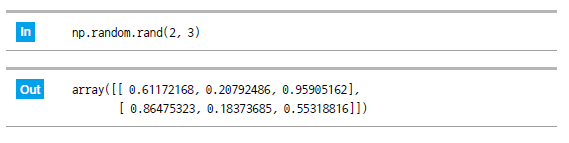

1. 이번 단원에서 배우는 것
실제 데이터 분석에서는 원본 데이터를 그대로 사용하기보다 필요한 행과 열만 골라 새로운 분석용 데이터로 만드는 경우가 많습니다. 이번 단원에서는 간단한 학생 점수 데이터를 기준으로 필터링과 저장을 연습합니다.
행 필터링조건에 맞는 행만 선택합니다.
열 선택필요한 컬럼만 남깁니다.
컬럼 추가새 계산 결과를 컬럼으로 추가합니다.
결과 저장분석용 CSV 파일로 저장합니다.
2. 실습 데이터 준비
다음과 같은 학생 점수 데이터를 사용한다고 가정합니다. 파일명은 students.csv입니다.
name,grade,score,attendance
민수,1,85,95
지연,1,90,88
현우,2,72,80
서연,2,95,98
도윤,1,68,70
이 데이터에서 점수와 출석률을 기준으로 우수 학생만 선택하고, 필요한 컬럼만 남기는 것이 목표입니다.
3. CSV 파일 읽기
먼저 pandas로 CSV 파일을 읽습니다. 읽은 데이터는 DataFrame으로 저장됩니다.
import pandas as pd
df = pd.read_csv("students.csv")
print(df)
확인 습관: 데이터를 읽은 뒤에는 반드시
head(), shape, columns로 구조를 확인하세요.print(df.head())
print(df.shape)
print(df.columns)
4. 행 필터링
행 필터링은 조건을 만족하는 행만 남기는 작업입니다. 예를 들어 점수가 80점 이상인 학생만 선택할 수 있습니다.

high_score = df[df["score"] >= 80]
print(high_score)
조건을 여러 개 사용하는 경우
점수가 80점 이상이고 출석률이 90 이상인 학생만 선택하려면 조건을 괄호로 묶고 & 기호를 사용합니다.
excellent = df[(df["score"] >= 80) & (df["attendance"] >= 90)]
print(excellent)
5. 열 선택
분석에 필요한 컬럼만 남길 수 있습니다. 예를 들어 이름, 점수, 출석률만 남기려면 컬럼 이름 리스트를 사용합니다.
selected = df[["name", "score", "attendance"]]
print(selected)
데이터 분석 연결: 실제 프로젝트에서는 컬럼이 수십 개 이상인 경우가 많기 때문에 필요한 컬럼만 선택하는 습관이 중요합니다.
6. 새 컬럼 추가
기존 컬럼을 이용해 새로운 컬럼을 만들 수 있습니다. 예를 들어 점수가 80점 이상이면 합격 여부를 True로 저장합니다.
df["pass"] = df["score"] >= 80
print(df)
문자열로 표시하고 싶다면 간단한 조건식을 활용할 수 있습니다.
df["result"] = df["score"].apply(lambda x: "합격" if x >= 80 else "재시험")
print(df)
7. 결과 저장
처리한 결과는 to_csv()로 새 파일에 저장합니다. 원본 파일을 덮어쓰기보다 새 이름으로 저장하는 것이 안전합니다.
excellent = df[(df["score"] >= 80) & (df["attendance"] >= 90)]
excellent = excellent[["name", "score", "attendance", "result"]]
excellent.to_csv("excellent_students.csv", index=False, encoding="utf-8-sig")
권장: 원본 데이터는 그대로 두고, 처리 결과는
result, processed, filtered 같은 이름을 붙여 새 파일로 저장하세요.8. 실습 체크리스트
- CSV 파일을 pandas로 읽을 수 있다.
- 데이터의 행과 열 구조를 확인할 수 있다.
- 조건식을 사용해 필요한 행만 선택할 수 있다.
- 필요한 컬럼만 선택할 수 있다.
- 새 컬럼을 추가할 수 있다.
- 처리 결과를 새 CSV 파일로 저장할 수 있다.
9. 종합 실습 문제
1. 문제 출제
학생 점수 데이터에서 우수 학생 명단을 추출하여 새 CSV 파일로 저장하는 프로그램을 작성해 보세요.
students.csv파일을 읽습니다.- 점수
score가 80점 이상인 학생만 선택합니다. - 출석률
attendance가 90 이상인 학생만 선택합니다. name,score,attendance컬럼만 남깁니다.- 결과를
excellent_students.csv로 저장합니다.
2. 문제 해결에 필요한 개념 요약
| 개념 | 활용 방법 |
|---|---|
| CSV 읽기 | pd.read_csv()로 데이터를 읽습니다. |
| 행 필터링 | 점수와 출석률 조건을 동시에 적용합니다. |
| 열 선택 | 필요한 컬럼만 남깁니다. |
| CSV 저장 | to_csv()로 결과를 저장합니다. |
3. 수도코드
pandas를 불러온다.
students.csv 파일을 읽는다.
score가 80 이상인지 조건을 만든다.
attendance가 90 이상인지 조건을 만든다.
두 조건을 모두 만족하는 행만 선택한다.
name, score, attendance 컬럼만 선택한다.
결과를 화면에 출력한다.
excellent_students.csv 파일로 저장한다.
4. 실행 예시
입력 CSV 예시는 다음과 같습니다.
name,grade,score,attendance
민수,1,85,95
지연,1,90,88
현우,2,72,80
서연,2,95,98
도윤,1,68,70
예상 출력값은 다음과 같습니다.
name score attendance
0 민수 85 95
3 서연 95 98